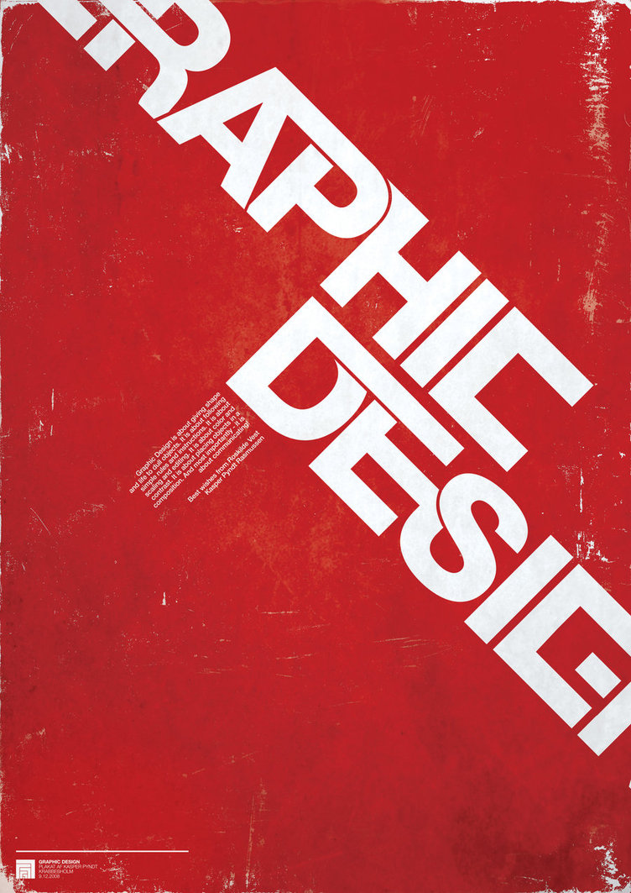

Graphic design is the process of visual communication, and problem-solving through the use of type, space, image and color.
The field is considered a subset of visual communication and communication design, but sometimes the term "graphic design" is used interchangeably with these due to overlapping skills involved. Graphic designers use various methods to create and combine words, symbols, and images to create a visual representation of ideas and messages. A graphic designer may use a combination of typography, visual arts and page layout techniques to produce a final result. Graphic design often refers to both the process (designing) by which the communication is created and the products (designs) which are generated.